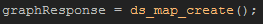
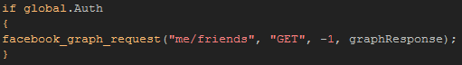
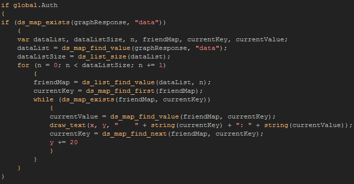
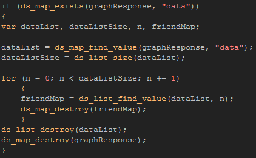

Tutorial
Page 6 of 8
Getting A Friends List
We have seen two of the main ways to post information to the user wall, but it may be necessary for you to also receive information from
Facebook. For that we use the same function as we used to post to the wall, facebook_graph_request(), but this time we will
be using it to get a ds_map rather than to send a ds_map. Specifically, we are going to get a list of the users friends.
Make another new object and call it "obj_GetFriends", then assign it a sprite and place the following code in the Create Event:

We will then add the following code into the the left mouse button PRESSED event:

With this we are expecting back some json code which will be converted into a ds_map automatically by GameMaker:Studio. Now, it should be noted
that to get the most out of these functions you really must know what to expect back from the Facebook API. To help with this you can go to the
Graph API Explorer and test out many of the available
functions in real-time and find out what the returning json objects and arrays are.
In this case, we are expecting to get back a ds_map with a "data" key, and that key should hold a ds_list. This ds_list is a series of ds_maps with a friend id/friend
name as a key and value pair. So, knowing this, lets use that information and draw it on the screen with the following code:

This code may seem quite complex, however it does exactly what was outlined in the text above... Checks to see if the a ds_map has been returned, and, if it has, it
finds the "data" key and extracts a ds_list from that. It then uses a "while" statement to extract the name (and id) of each friend on the users friends list, drawing them
on the screen.
As always when using data structures, once this instance is no longer needed, you should clean up afterwards, so there is also a destroy event with
the following code in it:

Test this now and you should see that your friends are listed on the right hand side of the screen when you press the appropriate button.
Click on the Next button to go to the next page of the tutorial.